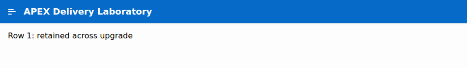
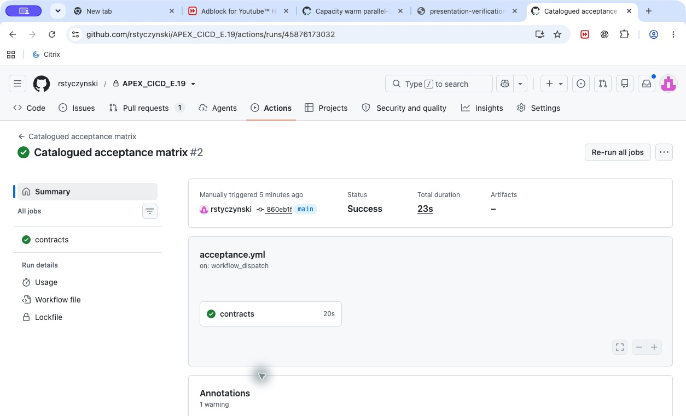

1. Open completed hosted run

Observed success, source 6b6a412, 21 seconds total. PBI-087 hosted execution, partial contract coverage. Capture occurred after completion; it does not record dispatch.
Next: job stepsReal Chrome application-window captures, execution order. Initial contract fixtures and separately identified actual native application observations. Requirement checklist · Run record
Observed success, source 6b6a412, 21 seconds total. PBI-087 hosted execution, partial contract coverage. Capture occurred after completion; it does not record dispatch.
Next: job steps
Opened job details. Valid tool/output/provenance steps succeeded. Expected provenance failure was tolerated for test inspection; downstream mutation sentinel was skipped and assertion passed. Detailed expected-error text is in the execution log, not expanded in this capture.
Derivative of capture 02 for handover readability. No new execution. Evidence index.
Real native job 45874462191, source 4d9b208. Captured before private input. Native receipt · Requirement/evidence index.
Same real job, after Sign In. APEX displays the row retained across native upgrade/repeat. Functional native receipts establish preservation. Native receipt · Requirement/evidence index.

Derivative of capture 05 for readable slide display. No new interaction. Evidence index.

Actual later Chrome inspection of run 45876173032. Observed success in 23 seconds. Exact action outcomes · Evidence index.